WebSphere Application Server 6.1 Feature Pack for
EJB 3.0/JPA Counter Sample
Overview
The EJB3CounterSample application demonstrates EJB 3.0 and JPA 1.0 functionality. The sample is very easy to install. It provides both local and remote access to the EJB. For the local access, it contains a servlet that provides web browser access to a stateless session bean, which implements a persistent counter, using Java Persistence API (JPA). Remote access is through an application client using the J2EE application client container. A JPA counter Entity provides persistence via a datasource that is connected to an embedded Derby database table. WebSphere Application Server enhanced ear support pre-configures the datasource and database table. Therefore, you can simply install the application and the persistent resources are ready to use. The functionality demonstrated by the sample is described in more detail below.
JavaEE 5, EJB 3.0, JPA 1.0 and WebSphere Application Server Functions Demonstrated by Sample
The EJB3CounterSample application demonstrates new WebSphere Application Server capabilities and Java EE 5 functions. Following is a list of these functions with references to various parts of the sample source code.
- Integrated, Just-In-Time Deployment in the EJB Container and JPA Provider. The EJB and JPA Entities in the sample have no pre-generated deployed files present in their module. This is because the WebSphere Application Server EJB Container no longer requires pre-generated artifacts (e.g. from running the EJBDeploy tool), as these are now implemented dynamically inside the Container. Similarly, the JPA provider does not require pre-generated artifacts.
- Use of annotations rather than XML deployment descriptors, and leveraging of default metadata. The EJB in this sample uses J2SE 5.0 annotations to configure "Plain Old Java Objects" (POJOs) as enterprise beans (see @Stateless in StatelessCounterBean.java). These annotations replace the need for <session> and <session-type> elements in an ejb-jar.xml file. In fact notice that the EJB3Beans.jar in the sample does not contain any XML deployment descriptor or bindings files at all.
- Progressive disclosure of complexity. The EJB in the sample demonstrates that it is no longer necessary to provide implementations for ejb framework lifecycle methods like ejbCreate, ejbActivate, and so on. Notice that in StatelessCounterBean.java there is no longer a requirement to implement javax.ejb.SessionBean in the bean class.
- The EJB in the sample demonstrates that home interfaces are no longer required for your session beans. You also no longer have to lookup a home reference in naming and then use the home to create an instance of the EJB. Now you can directly lookup the business interface for the EJB and begin using the reference without doing any create operation. In the sample you can see this demonstrated in the servlet code EJBCount.java. There is no reference to an EJB Home for the stateless session bean.
- This sample demonstrates the use of EJB injection. Notice that EJBCount declares a variable, statelessCounter, with one of the interfaces on the ejb (LocalCounter). Notice that there is no lookup required before using this variable.
- This sample also demonstrates the use of multiple business interfaces on an EJB (StatelessCounterBean). The LocalCounter interface is used by the EJBCount class of the servlet, while the RemoteCounter interface is used by the RemoteEJBCount class that runs in the client container. Since there are multiple interfaces, they must be designated as local or remote interfaces. You'll see the @Local and @Remote annotations within the corresponding interface classes.
- The EJB in the sample demonstrates EJB 3.0 interceptors. The Audit.java POJO is an @AroundInvoke interceptor class which is used by the EJB in the sample. See the @Interceptors annotation in the StatelessCounterBean.java. Examine the SystemOut.log file of your server to see the Audit interceptor method methodChecker() in action.
- There is additional injection demonstrated in the the sample. Notice in StatelessCounterBean.java that there is an @PersistenceContext(unitName="Counter") annotation before the variable definition line “private EntityManager em;” This causes the JPA EnityManager to be injected into the “em” variable by the WebSphere Application Server EJB Container. The bean does not have to create this object since it's already provided through injection.
- The stateless session bean in the sample demonstrates use of a
container managed persistence context. Examine the methods “increment”
and “getTheValue” in StatelessCounterBean.java to see the EntityManager
interactions with JPA and the JPA entity object JPACounterEntity. The
source code for the JPA entity object is in JPACounterEntity.java.
It is also interesting to look at how JPA gets configured
to connect with the Derby database. The persistence.xml file in
the EJB3Beans.jar defines the datasource that JPA will use in the
<jta-data-source> element. It also contains a
performance enhancement. The
<exclude-unlisted-classes> element, followed by the <class>
element, makes application initialization faster by limiting JPA's
search for classes that make up the persistence context. Use of this
performance enhancement is strongly encouraged. Finally, the
resources.xml file under the /ibmconfig directory shows the definition
of the datasource in WebSphere Application Server enhanced ear support.
In this resources.xml file you can see the “jndiName” of the
application scoped datasource, and the “databaseName”, showing the the
Derby database location. The enhanced EAR config files are created
using the Application Server Toolkit (AST) deployment descriptor editor.
Installing and Starting the Sample
The EJB3CounterSample application is preloaded into the WAS_HOME/samples/lib directory in the feature pack. The WebSphere InfoCenter contains details for 2 methods for installing and starting the sample:
- Using the adminstrative console. Search for “Installing EJB 3.0 Samples with the console”.
- Using a script. Search for “Installing EJB 3.0 Samples using scripting”.
Executing the sample
The sample can be executed either locally from the servlet or remotely using the client container.
Executing the sample from the servlet
The counter sample’s web application is accessed by opening
a web browser at url “http://localhost:9080/ejb3sample/counter”
on the system where you installed the feature pack. (Note: the port in
your configuration may be other than 9080. 9080 is typical.)
You should see the sample's web page as follows.

Click on the Increment button to cause the servlet to access the EJB.

To see what the
sample application is doing within the WebSphere Application Server,
navigate
your file system to view the SystemOut.log file in the directory WAS_HOME/profiles/<your
profile name>/logs/<your
server name>/. Part of the log is shown below -- you can see the
output of the "Audit" interceptor that was mentioned near the top of
this document.
[12/7/06 15:35:01:946 CST] 00000031 SystemOut O Audit:methodChecker - About to execute method: public int com.ibm.websphere.ejb3sample.counter.StatefulCounterBean.increment()
[12/7/06 15:35:04:439 CST] 00000031 SystemOut O Audit:methodChecker - About to execute method: public int com.ibm.websphere.ejb3sample.counter.StatefulCounterBean.increment()
[12/7/06 15:35:06:903 CST] 00000031 SystemOut O Audit:methodChecker - About to execute method: public int com.ibm.websphere.ejb3sample.counter.StatefulCounterBean.increment()
[12/7/06 15:35:10:738 CST] 00000031 SystemOut O Audit:methodChecker - About to execute method: public int com.ibm.websphere.ejb3sample.counter.StatelessCounterBean.increment()
[12/7/06 15:35:12:181 CST] 00000031 InternalGener I DSRA8203I: Database product name : Apache Derby
[12/7/06 15:35:12:191 CST] 00000031 InternalGener I DSRA8204I: Database product version : 10.1.3.2
[12/7/06 15:35:12:191 CST] 00000031 InternalGener I DSRA8205I: JDBC driver name : Apache Derby Embedded JDBC Driver
[12/7/06 15:35:12:251 CST] 00000031 InternalGener I DSRA8206I: JDBC driver version : 10.1.3.2
[12/7/06 15:35:13:843 CST] 00000031 SystemOut O JPACounterEntity:setPrimaryKey = 'PRIMARYKEY'
[12/7/06 15:35:13:843 CST] 00000031 SystemOut O JPACounterEntity:getValue = 0
[12/7/06 15:35:13:843 CST] 00000031 SystemOut O JPACounterEntity:setValue = 1
[12/7/06 15:35:14:143 CST] 00000031 SystemOut O JPACounterEntity:getValue = 1
[12/7/06 15:35:14:153 CST] 00000031 SystemOut O Audit:methodChecker - About to execute method: public int com.ibm.websphere.ejb3sample.counter.StatelessCounterBean.getTheValue()
[12/7/06 15:35:14:163 CST] 00000031 SystemOut O JPACounterEntity:getValue = 1
[12/7/06 15:35:16:977 CST] 00000031 SystemOut O Audit:methodChecker - About to execute method: public int com.ibm.websphere.ejb3sample.counter.StatelessCounterBean.increment()
[12/7/06 15:35:16:977 CST] 00000031 SystemOut O JPACounterEntity:getValue = 1
[12/7/06 15:35:16:977 CST] 00000031 SystemOut O JPACounterEntity:setValue = 2
[12/7/06 15:35:17:058 CST] 00000031 SystemOut O JPACounterEntity:getValue = 2
[12/7/06 15:35:17:068 CST] 00000031 SystemOut O Audit:methodChecker - About to execute method: public int com.ibm.websphere.ejb3sample.counter.StatelessCounterBean.getTheValue()
[12/7/06 15:35:17:068 CST] 00000031 SystemOut O JPACounterEntity:getValue = 2
[12/7/06 15:35:19:721 CST] 00000031 SystemOut O Audit:methodChecker - About to execute method: public int com.ibm.websphere.ejb3sample.counter.StatelessCounterBean.increment()
[12/7/06 15:35:19:721 CST] 00000031 SystemOut O JPACounterEntity:getValue = 2
[12/7/06 15:35:19:721 CST] 00000031 SystemOut O JPACounterEntity:setValue = 3
[12/7/06 15:35:19:721 CST] 00000031 SystemOut O JPACounterEntity:getValue = 3
[12/7/06 15:35:19:721 CST] 00000031 SystemOut O Audit:methodChecker - About to execute method: public int com.ibm.websphere.ejb3sample.counter.StatelessCounterBean.getTheValue()
[12/7/06 15:35:19:721 CST] 00000031 SystemOut O JPACounterEntity:getValue = 3
You may wish to modify the sample and try additional
features supported by the Beta release. Instructions are provided below
on how to modify the application. Please take some time to
look at the sample
source code. The sample source code
demonstrates several EJB 3.0 and JPA 1.0 features (see EJB 3.0 and
JPA 1.0 functions demonstrated by the sample at the top of this
document for futher explanation). For a complete list of the
functions
supported by the feature pack see the Getting Started Guide.
Executing the sample from the client
First, run the createEJBStubs command against the ear file to
generate remote
stubs in the EJB3Beans.jar file that is contained in the sample ear.

Next, execute the sample using the launchClient command.
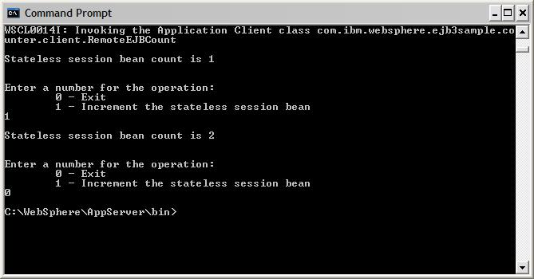
Uninstalling the sample
To uninstall the counter sample perform the following actions:
- Bring up the WebSphere Integrated Solutions Console in a web browser.
- From the console, display the “Enterprise Applications” panel by selecting Applications -> Enterprise Applications.
- On this panel select the check box just to the left of the EJB3CounterSample application.
- Press the “Uninstall” button above the application list. (You will be taken to the “Uninstall Application” panel.)
- Press the “OK” button to confirm that you want to uninstall the application. (You will be taken back to the "Enterprise Applications” panel.)
- Verify that the EJB3CounterSample has been removed from the list of installed applications.
- Select the “Save” option on this panel to save these configuration changes directly to the master configuration.
Modifying the sample
The feature pack includes the source code for the EJB3CounterSample application. Please feel free to change this sample and try out additional functions supported by the feature pack. Two build environments have been tested with the sample. The feature pack includes the build control files so that you can either use the WebSphere Ant build process to rebuild the application, or you may import the sample into the Eclipse tool and rebuild it in that environment. Below are more details for rebuilding the sample.
Building the sample with WebSphere ANT
To rebuild the same using WebSphere ANT support, perform the following:
- Open a command window.
- Navigate to the directory "WAS_HOME/samples/src/EJB3SampleApplications/EJB3Counter".
- Issue the command WAS_HOME/bin/ws_ant. (The resulting EJB3CounterSample.ear files will be placed in the directory "WAS_HOME/samples/lib/EJB3SampleApplications."
- Follow the instructions above in "Uninstalling the sample" to remove the existing sample application.
- Follow the instructions above in "Installing and starting the sample" to install and activate your modified application. (During the install instructions, you will need to navigate the file system to the "WAS_HOME/samples/lib/EJB3SampleApplications" directory, rather than "WAS_HOME/installableApps" to install your modified application.
Setting up an EJB 3.0/JPA Development Environment with Eclipse
These instructions assume you have installed the WebSphere Application Server v6.1 Feature Pack for EJB 3.0 using the default location of c:/Program Files/IBM/WebSphere/AppServer. If you have used an alternate location, one small change will be necessary in the build.xml file.
Also, these instructions are using Eclipse v3.2 with a Java SE 5.0 compiler as the default. The Java SE 5.0 environment is a requirement for the EJB 3.0 and JPA programming models.
Setting up Workspace
- Start Eclipse
- Open either a new or existing
workspace.
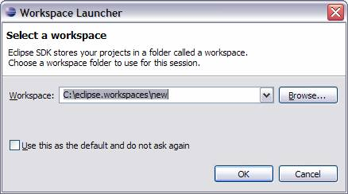
- Close the Welcome screen
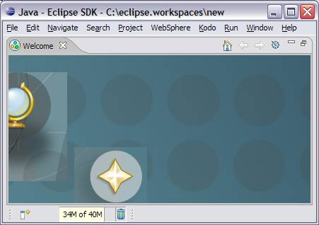
- Switch to the Java Perspective.
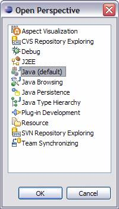
- Your Eclipse may be setup to use a
Java 1.4 JDK and JRE by default. You need
to update the preferences in order to compile Java 5 code.
EJB 3.0 and JPA rely on Java 5 annotations and features.
- Select Window from the main menu,
and then Preferences…
- Expand the Java section and select
Compiler. Switch the Compiler
compliance level to 5.0 as shown below.
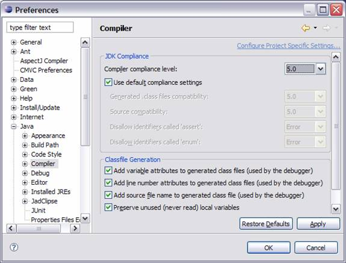
- Press Apply. The
following prompt may appear. If it does,
just click Yes and continue.
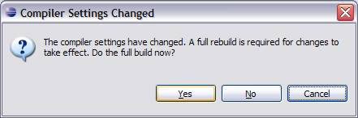
- Next switch to the Installed JREs
and add the JRE that shipped with WebSphere Application Server v6.1.
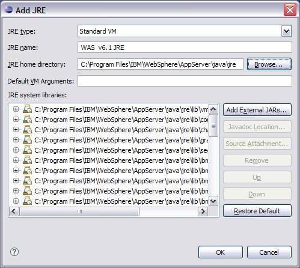
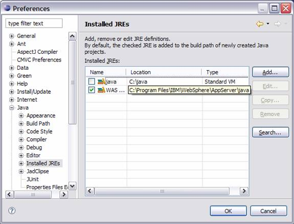
- Press OK to save the changes and
Press Yes to do a build. The following
prompt may appear. If so, select Yes and
continue.
Creating a Java project
In this section you will walk you through creating
the sample Java Project.
- First you need to create the Java
Project via File -> New -> Project. Select
Java Project and click Next…
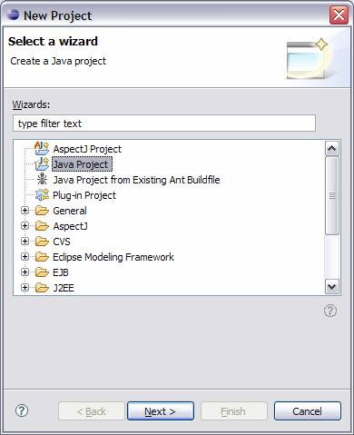
- Fill in the name for your project. Depending on the defaults for your Eclipse
environment, you may also want to select the options as outlined below. Click Next…
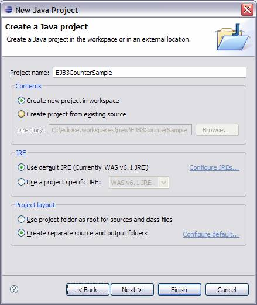
- This next panel just shows the default
values for the project. After reviewing
these choices, click Finish. You will be
adjusting some of these project settings after you import the sample
source. Your Eclipse project has been
created.
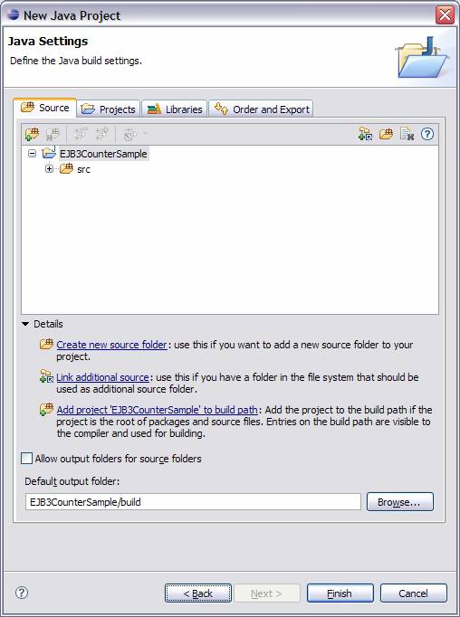
Adding Java EE Runtime Jar files to your project
- In order to compile cleanly within
Eclipse, the Java EE runtime jars from the Feature Pack installation
need to be included as external jars for your Eclipse project. To do this, open your Project’s Properties
-> Java Build Path and open the Libraries tab:
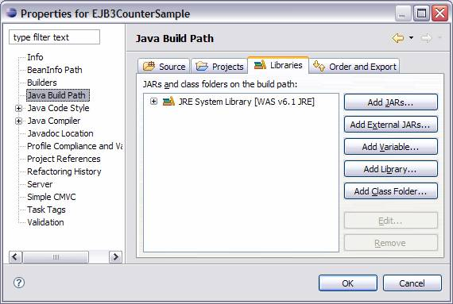
- Click on Add External JARs… and
navigate to the plugins directory within the install location for the
WebSphere Application Server. Here, you
need to select the com.ibm.ws.jpa_7.0.0.jar and
com.ibm.ws.runtime_6.1.0.jar files. These
files give you access to the JPA and EJB 3.0 runtime classes necessary for
building your projects.
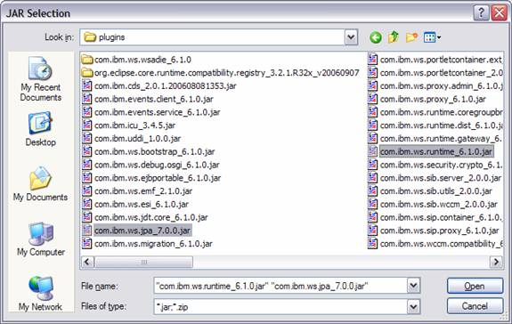
- You also need to include the j2ee.jar
from the lib directory:
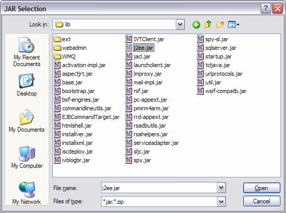
- The Libraries tab should now look
similar to this:
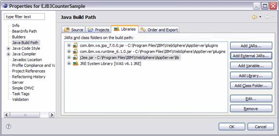
Importing the Sample Source
- Now that you have the workspace and
project properly configured, you can import the source from the
EJB3CounterSample. To do this, highlight
your EJB3CounterSample project within Eclipse, right mouse click, and
select Import… On the first Import panel,
select File System and click Next:
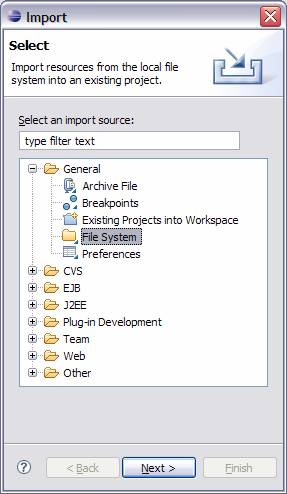
- On the next panel, use the Browse
function to find the samples subdirectory within your WebSphere
Application Server installation. Only
select the src directory since the lib directory contains binaries that
are not needed for the Eclipse import. Click
Finish to complete the import process:
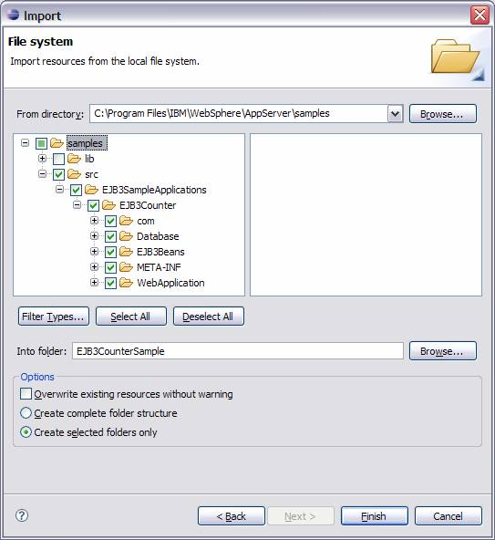
- After the import, you will notice some
“red x” marks indicating build failures. You
need to configure the project’s source directories.
Once again, open the Properties panel for your
EJB3CounterSample project and select the Java Build Path.
This time, open the Source tab:
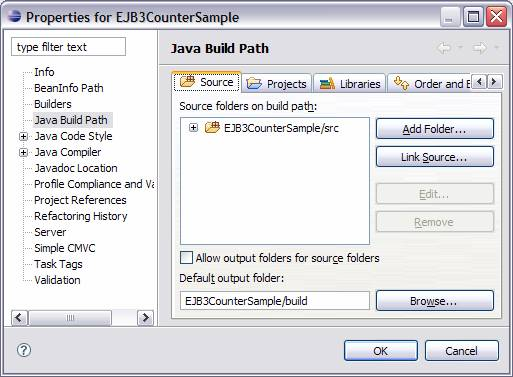
- Click on Add Folder…
Expand the src folder and select the EJB3Counter directory
and click OK:
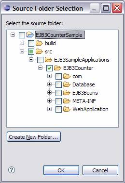
- You’ll see an error about nesting
source folders.
Since you do not have any source files in the “src” directory, you just need to remove this directory from the source folders:
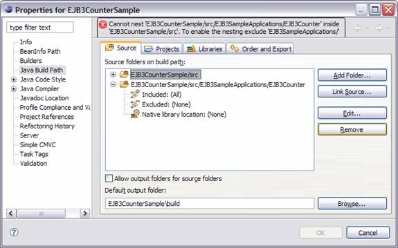
This screen should look like this after the Remove operation:
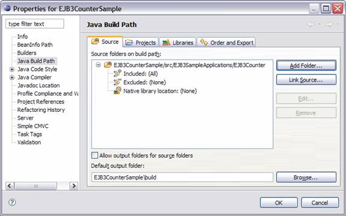
- When you click OK on this panel, your
project should automatically re-build and the “red x” marks should
disappear:
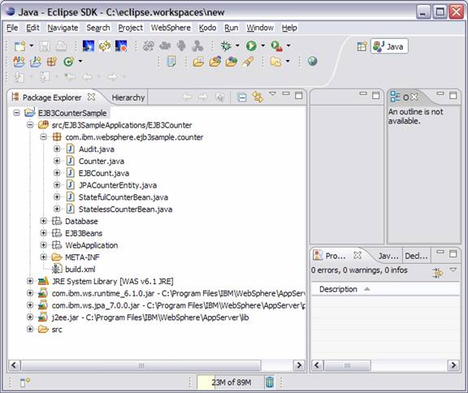
Building the EJB3CounterSample Application
With the above configuration, basic compiling and
building can be done via Eclipse. But,
the packaging of the application into an enterprise application archive
(ear) requires the use of an ant build.xml script.
Let’s take a quick look at this
build.xml file:
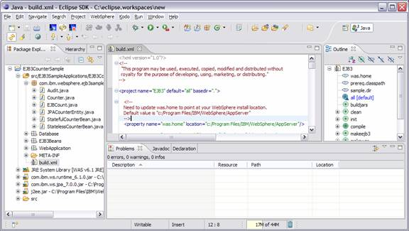
If you have installed WebSphere Application Server
in a different
directory from the default (c:/Program Files/IBM/WebSphere/AppServer),
you will have to update the was.home property to the appropriate value.
- To kick off the build to create the
ear file, just highlight the build.xml, right mouse click, select Run
As.. -> Ant Build. Your Console window
should look similar to the following:
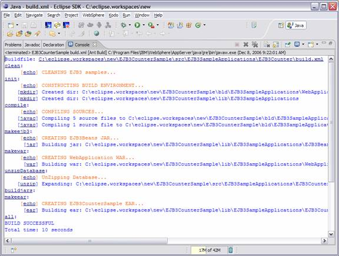
- Go back to your Package Explorer,
highlight the EJB3CounterSample, and select Refresh.
You will now notice that the EJB3Beans.jar,
WebApplication.war, and EJB3CounterSample.ear files have been created
in the lib directory:
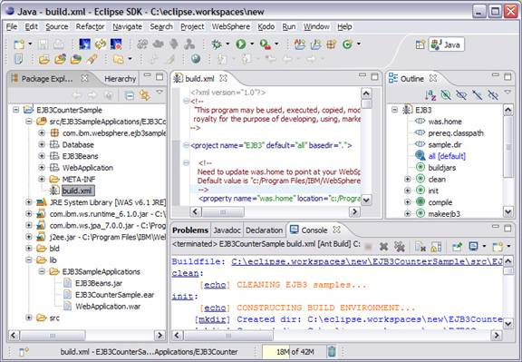
- The EJB3CounterSample.ear file can now be installed into your WebSphere Application Server environment.
Known limitations with sample
- The EJBCounterSample application is known to have installation
and configuration problems with WAS ND due to the embedded database
being located in a different location on the filesystem.
- Because of the embedded database, the EJBCounterSample will not work correctly in a cluster environment. If you desire to use the sample in a cluster environment, configure an external database for the sample.
- The Derby database will not permit removal of the database files with the WebSphere Application Server process is active. If you uninstall and reinstall the sample application using the admin console support (i.e. while the server process is started) you will see warning message in the SystemOut.log, concerning Derby database files that are locked and cannot be deleted. Then, when you reactivate the sample, the counter value in the Derby database table will still be at the value left over from any previous execution of the sample.